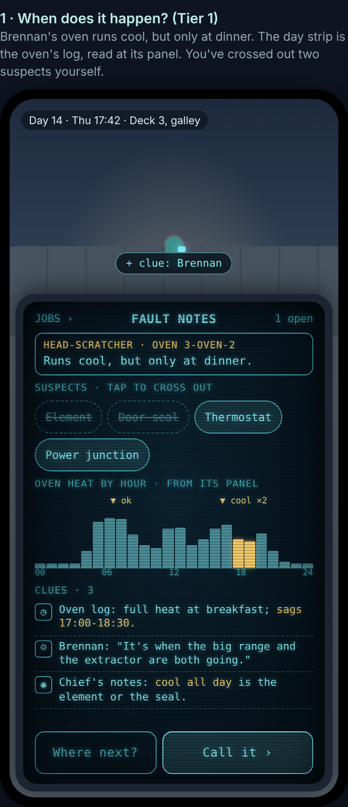
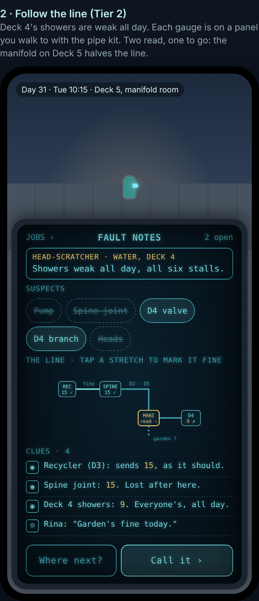
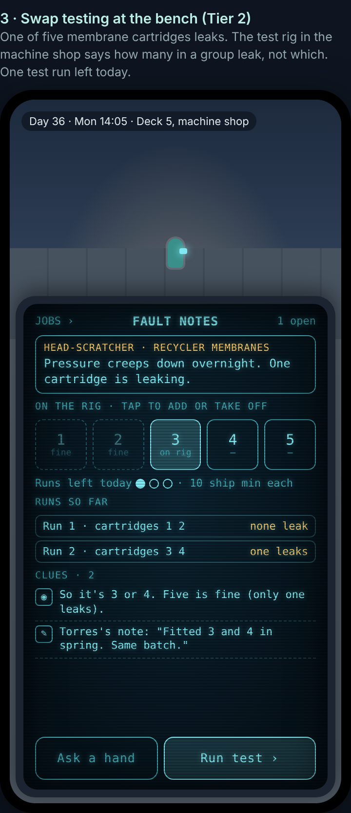

In short
Today the Works job does one thing: fetch a part and replace it. Even the odd jobs on the board (a vent, a delivery, a round) all play the same way: walk there and hold to work. Pillar 5 gives the job a ladder of new mechanics, each a different way of working. They open slowly, one at a time, and each is taught to you by a person on a real job. You start simple, and the job keeps opening up as you work on more of the ship.
The rules every mechanic follows
- Start simple. Your first week (built in Pillar 4) teaches fetch and replace. Everything new comes after that, one piece at a time.
- Taught by a person. Short lines, on a real job. At most one small control tip.
- Physical. When you have to choose (which part, which valve), you choose from what you've seen on the deck. added The new head-scratchers keep to this: clues are found around the ship, and the fix is still done by hand.
- Words, not numbers. Your Record says "Trained: rounds, laundry, hauling" and "Ovens: you know these well". No points, no bars.
- The ship never depends on you. The crew can do every kind of work too, just more slowly, so there's always work for you but nothing falls apart without you.
The ladder
- Fetch and replaceZeke Torres shows you the basic job in your first week.
- RoundsWalk a route of machines, look at each, and mark what you see. Catch wear early.
- Laundry and uniformsYour uniform gets grubby; change it, wash it, and take your turn on laundry duty.
- The drill and the inspectionA job of your own at the Wednesday drill; get your berth and uniform ready for Thursday.
- Hauling and storesCart runs from a list of stops, and counting the shelves.
- TuningAdjust a machine that's out of true while you watch it settle.
- Making it safeSmall incidents: shut it off first, clean up, then fix.
- The scannerRead a machine's parts and work out which one is failing.
- Your test job and promotionOfficer's badge, your own cabin.
- Team jobsBig jobs with three or four crew.
- Tool upkeepLook after your own tools at your bench. your pick
- Tracing faultsFaults that start somewhere else.
- The logbookYour line in the Works log at the end of a shift. your pick
- Leak huntingFollow the wet to the drip. your pick
- The workshopCrew order small things; you make them.
- Garden irrigationClear the racks' nozzles at harvest. your pick
- RewiringFollow a junction's colour chart. your pick
- Coolant roundsRead the engine coils' gauges on Deck 6. your pick
- On the lift roofRide the lift car's roof down the spine. your pick
Each mechanic
Off shift, alongside the ladder: tinkering in the machine shop (things to give or keep), 3 or 4 spots in your cabin for things you bought or made, and logging stars for Survey at the observatory telescope.
Your first promotion
changed The moment itself is now a full sequence (a summons, the crew, being walked to your cabin, an officer ceremony): see career progression.
- Counts: jobs done well, faults caught early, the right part first time, and the mechanics you've been trained in. Reliability is Pillar 4's "Work" reputation plus turning up to the drill and the inspection.
- The test job uses what you've learned: a round finds it, the scanner reads it, you fit the part, maybe a tuning step. Calder follows you (Torres on her days off). If it goes wrong, she tells you what to practise and sets another in a week.
- Next morning at the board she hands you the Officer's badge, the Captain sends Mail, and you move into the spare cabin 4-23. The bigger story around promotion comes in Pillar 7.
Seven more, on the ladder your pick: all seven
You picked all seven extra ideas. They come after your promotion, between days 23 and 35: the days before promotion already have something new each day, and several need things you only have by then (your tools, the Tier 2 wiring, the engine deck, the lift's shaft). The easy ones come first, and the trickiest to build (the lift roof) comes last. With team jobs, tracing and the workshop that's ten new things in about three weeks: one every two or three days, the pace you agreed.
Added: deductive repair puzzles new · your ask
You asked to keep the whole plan and add deduction puzzles to some repairs, starting about 30 to 50% of the way into your progression, so the early job stays simple. Nothing above changes, and the progression isn't made any longer. This adds a second track beside the ladder.
The idea
Some faults don't tell you their cause. The crew call them head-scratchers. The job card names a symptom ("the oven runs cool, but only at dinner"), and a new device page, Fault notes, lists the suspects (the parts or causes it could be). You collect clues by walking the ship: reading the machine's log at its panel, asking the crew who were there, finding the last shift's note, reading a gauge on Deck 5, checking the week's calendar. Each clue lets you cross a suspect out. When you're sure, you call it, and the rest is the job you know: fetch the part, fit it, turn it in.
How often
| When | Head-scratchers among your real faults |
|---|---|
| Days 1-12 | none (your first week and the first ladder steps stay simple) |
| Days 13-19 | about 1 in 8 (one every other workday), one at a time |
| Day 19 to promotion | about 1 in 6 |
| Tier 2, weeks 4-5 | about 1 in 5 (1 in 3 on Tier 2 machines), two open at most |
| Tier 2, week 6 on | about 1 in 4 (1 in 3 on Tier 2 machines) |
They're taken out of your 3 to 6 jobs a day, not added on top. None on days off or event days. No setting to change how many (your choice): the hints and "the long way" keep it kind.
The nine kinds of puzzle (eight in Pillar 5)
Each kind is taught like a ladder step (the teacher does the first case with you, thinking out loud, then watches you do one). Each grows with your tier: more suspects, clues on more decks, a witness with an honest mix-up, and at the top, two causes at once.
Hints, gentlest first
- The Chief's notes: Calder's binder of rules of thumb ("Weak only at the busy hour: the pump. Weak all day: the filter."), on her shelf and on your device. A page is added with each training, and more for machines you know well.
- Ask a Works hand on shift: they tell you what kind of clue you're missing.
- Talk it through with Torres or Calder: they cross one suspect out with you.
- The long way: fit each suspect in turn. It always works.
Where the puzzles start: about a third of the way in
Your job's progression in Pillar 5 runs from day 1 (your first week) to about day 42 (the end of the after-promotion mechanics). The early part has no puzzles at all. The first head-scratcher comes at about day 13: about 31% of the way in. By time played, which is what you feel, that's inside the 30 to 50% you asked for, and you confirmed it. (Counted by ladder steps it's after 5 of 19 now that your seven extra mechanics are in, all of them after promotion.) The progression is no longer than before.
What starts it: not a date. Like every ladder step, it opens once the step before it, hauling, has been used about three times, on a day with nothing else new. For a steady player that's about day 13; if you're slower it waits, but it always comes at the same point: after hauling, before tuning. Torres finds you at the board with a job the last shift couldn't crack.
Then it grows: about 1 in 8 of your real faults at first, 1 in 6 after the scanner, 1 in 5 once you're promoted, and about 1 in 4 in the last week. Only ever some repairs.
- What's been tried?Your first head-scratcher, with the Fault notes page and the Chief's notes.
- When does it happen?Between hauling and tuning on the ladder.
- Who saw what?A new "Ask about the fault" button when you chat.
- Which gauge is lying?The day after the scanner.
- Your test jobgains one easy head-scratcher step. Still only ever delayed.
- Follow the lineTwo days after tracing faults; the logger tool.
- Swap testingThe test rig, two days after the workshop.
- Does it add up?
- Fault-finderYour first grade and its pin.
- Faded labelsAfter rewiring.
- Trusted fault-finderYour second grade.
- FavoursCrew start bringing you their own little mysteries.
- Old mysteriesThe board of old mysteries opens as Pillar 5 ends; the ship's fault-finder comes when you're ready, after.
- The clashKept for later tiers, as you asked.
Alongside everything else
- Rounds: a "something's off" mark can turn into a head-scratcher. Laundry: washer mysteries; the laundry hand is a witness. The drill: the power drill is a free clue for faded labels. Hauling: Tier 2 wrong calls use stock. Tuning: some answers are "it's a setting, not a part".
- Incidents: never a puzzle while making it safe; afterwards an optional "why did it burst?". The scanner: one of the clue types. Team jobs: an answer can be "this needs a team". Tracing: grows into "Follow the line" and "Does it add up?". The workshop: home of the test rig.
- Your device gains Fault notes and the Chief's notes beside Training, Work log and Tools.
On your phone
One case per screen in the device's cyan style: the symptom, the suspects as big chips you tap to cross out (you cross them out; the game never does it for you), the puzzle's own view (a day strip, a line map, a grid or the test rig), your clues, and two buttons: Where next? (points the arrow at a clue place you haven't visited) and Call it. Tap only, everything at least thumb-sized, grids no bigger than 5 by 5. Nothing new is drawn on the decks.



The mock-ups are also a page of their own: plans/pillar5-puzzles-mockup.html.
What it adds to the team and the order
- Seats: inside the one small team below: the designer also writes the puzzle pages and plays the generated cases for fairness, and one head-scratcher engineer builds them across three steps.
- The order: the first four kinds in step 3 (days 13 to 19), the test-job step in step 4, two Tier 2 kinds in step 5, and the rest with the grades and extras in step 6. The clash waits for Tier 3.
- A new check (
puzzle_check.py) runs the whole progression on paper and checks every case: exactly one answer, needs more than one clue, every clue reachable, the long way always works, the right share per tier, and the same result twice.
Added: career progression new · your ask
You asked to bring career progression into Pillar 5, "since it all coincides". It used to be Pillar 7's. Everything above stays; this replaces only the short "promotion moment" with a proper sequence.
How ranking up works: one clear rule
- One thing to watch: your Works reputation, in words, never a number (it's the same Work reputation the crew already have of you).
- It goes up with jobs done (bigger faults count more), faults you catch early, the right part first time, clever fixes, turning up to the drill and the inspection. It goes down with missed shifts and jobs left half-done.
- It decides the work you're given: the higher it is, the more interesting the jobs the crew leave for you on the board.
- You always know where you stand: your Record shows your rank, your reputation in words and one "What's next" line ("Calder wants to see you handle a scrubber before she puts you up"). You're never demoted: a dip just means fewer interesting jobs until you pick up again.
| Reputation | Jobs left for you |
|---|---|
| New | fetch and replace, chores (your first week) |
| Steady | about half real faults; rounds, laundry, hauling |
| Reliable | urgent jobs too; the first head-scratchers; tuning and incidents |
| Trusted | a supervised Tier 2 job now and then |
| Relied on | Calder sets your test job for promotion |
After a promotion it starts again for your new rank ("New officer" and up), each step bringing harder Tier 2 work.
Your ranks
| Rank | Works title | Where you live | When |
|---|---|---|---|
| Junior Officer | Junior Technician | Bunk 1, with Tomas | when you arrive |
| Officer | Technician | your own cabin, 4-23 | about day 20, in Pillar 5, with the officer ceremony |
| Senior Officer | Senior Technician (Tier 3) | Deck 2's visitors' suite, made yours | about day 44, in Pillar 5 |
| Senior Officer | Engine Specialist (Tier 4) | your Deck 2 suite | about day 70 |
You climb but never command, so Senior Officer is the top (your answer).
Your first promotion, step by step
- The test jobA real Tier 2 job with Calder watching. If it goes wrong, she tells you what to practise and sets another in a week.
- The summonsYour device sounds: "Chief Calder: My office, 11:00. — C." Torres: "Go on. She doesn't bite. Usually." If you don't come, she walks over and finds you. You can't miss it.
- The sceneShe tells you you've passed and hands you the Technician's badge and your Officer's collar pip. You answer (proud, surprised, or "about time"), and she remembers which.
- The crew reactThe Works crew are gathered at the board when you come out: applause, Torres grinning. Friends congratulate you all day, there's Mail from friends and the Captain, a ship news item, and Brennan's cake at the Works tea corner after the shift.
- Your new quartersCalder walks you up to the officers' corridor, talking about officers' ways. On the way you pass Tomas and Pell carrying your box. Your name and rank are already on the door of 4-23, and your things are inside. Tomas: "Don't be a stranger, Officer."
- The officer ceremonyIn the observation room on Deck 1, with the Captain, Commander Vance, Calder, Torres and up to three of your closest friends. The Captain reads your commission and pins your insignia (your uniform shows it from now on), then a handshake and a toast. The framed commission goes on your shelf.
Your second promotion
It happens in Pillar 5 too, as you chose: see Tiers 3 and 4.
Added: Tiers 3 and 4, the night shift, mentoring and your story new · your answers
You chose to build everything that was Pillar 7 into Pillar 5: "I know it's big. But this is absolute bulk of the game." This section covers that work: the second promotion (switched on right away), Tier 3, a week on the night shift, Tier 4, mentoring a junior and your career story. It also maps every job to the rank it needs, with some jobs reserved for a rank, as you asked.
The whole journey: about 14 ship weeks
About 98 ship days, roughly 65 real hours, of new things opening (before, it was about 42 days). After that the ship keeps running with all your work, the puzzles and, later, the ship-wide events.
Your second promotion: Senior Officer (about days 43 to 45)
A Tier 3 test job (your first planned shutdown, with Calder) comes first. The next work day there's an urgent summons: Calder's office, then together to the Captain's ready room, where the Captain tells you. Deck 2's visitors' suite, on the hull with a window, is refitted as yours; you can take the refit job yourself and watch the door plate change to your name. Commander Vance walks you up that evening with your things moved, and the Captain toasts you at a special dinner at the Captain's table the next evening. From then on, visitors stay in the second visitors' cabin and Deck 4's guest cabins.
Tier 3: planning around people (weeks 7 to 10)
Tier 4: leading a team (weeks 11 to 14)
Which jobs need which rank
Every job has a tier (its machine's tier), and some are reserved for a rank. The crew follow the same rule, so a reserved job waits for the right person and the ship never waits on you. After each promotion, junior jobs stop being left for you (you can still lend a hand).
| Rank | Your jobs | Reserved for this rank |
|---|---|---|
| Junior Officer · Tier 1 | fetch and replace, chores, rounds on a set route, tuning, incidents with Calder, the scanner, Tier 1 puzzles | junior jobs: laundry duty, the food cart, hauling runs, the bunk inspection; at the drill you hold the extinguisher or the door |
| Officer · Tier 2 | Tier 2 machines, tracing, team jobs (a pair of hands), the workshop, tool upkeep, leak hunting, irrigation, rewiring, coolant readings, the lift roof, Tier 2 puzzles, favours, old mysteries | writing the Works logbook; signing off hauling manifests; mustering the Works team at the drill; first on the scene at incidents |
| Senior Officer · Tier 3 | power, relays, batteries, the sensor array, Tier 3 puzzles, the clash | planning shutdowns, the Monday briefing, the night shift's senior post, running the drill, saying an incident is safe |
| Senior Officer · Tier 4 | engine work, the drive coils, Tier 4 puzzles | the reactor (specialists, with a permit), leading team jobs, mentoring a junior |
The full map, job by job, is in the detailed plan (plans/pillar5-plan.md, Part 8.8).
Still a small team: more steps, not more people
At most about 6 helpers at once. The six steps already planned are followed by five more, each with a check-in where you play it:
- Risks: the size (each step ends playable, and you can pause after any of them); the night shift turning your day upside down (it gets its own step, and it lasts one week only); reserved jobs left undone (senior crew take them too); crowding on Decks 1 and 6 (at most about 8 at the table, 4 on a team, phone speed measured).
Built on its own your answer
You said: "we will develop Pillar 5 on its own." So Pillar 5 starts after Pillar 4 is finished, not beside it. That makes it simpler:
- No racing for the game file: nobody else is changing the same parts at the same time.
- No extra crew to keep two pillars apart: the two "cross-pillar coordinators" and the second build master from the earlier plan aren't needed.
- Still tidy: the work lives in its own new part of the game file, one small block per mechanic with one owner, so taking a block out only removes that mechanic.
- Your first week stays safe: the ladder starts on day 8 and Pillar 4's first-week test runs on every change.
The team: one small crew
At most about 6 helpers at once, because you're watching usage. Three stay for the whole pillar; up to three builders join for their step and leave when it's signed off.
| Seat | Does | When |
|---|---|---|
| Designer (no code) | a page for every mechanic and puzzle kind for you to approve; plays each build and the generated puzzles before you do | throughout |
| Build master | puts the builders' work together, runs every test, checks each change against the checklist; the lead releases | throughout |
| Career engineer | the ladder, training, tools, skill in words, the test job, promotion, your device's work pages | steps 1, 2 and 4 |
| Systems engineer | more real faults; the machine side of every mechanic | step 1, then on call |
| Player engineer | the building blocks your hands use (look, choose, turn, wait); your uniform; off-shift things | step 1, then on call |
| Three mechanic engineers | about six mechanics each, in ladder order | steps 2, 3, 5 and 6 |
| Head-scratcher engineer | the puzzles, Fault notes, the hints, the grades | steps 3, 5 and 6 |
| Deck builder 2 | the new places (laundry, your bench, the garden racks, the engine gauges, your cabin, Deck 5's machine rooms) | steps 2, 4 and 5 |
| Works writer | training lines, incident lines, inspection remarks, witness lines, logbook summaries | steps 3, 4 and 6 |
If usage needs reining in further, it can run with 4 at once (the designer, the build master and two builders): slower, but nothing is cut. Helpers from Pillar 4 (crew schedules, phone speed, the device) are on call only when a step needs them.
The order, with a check-in after every step
Risks, and what we do about them
- Too much for a new player: one mechanic at a time, taught by a person, never two on a day.
- Mechanics becoming mini-games: everything in the world with your hands, feedback from the machine itself, no timers or scores.
- Phones slowing down: each mechanic's props are tiny (2 or 3 draw calls), only on their deck while in use, and measured against the 450 limit.
- The game must play the same every time: faults, drift and incidents are worked out from the day and the machine, never by chance, and checked twice.
- Usage: one small team, at most about 6 at once (4 if needed), after Pillar 4 is done.
- The lift roof: the trickiest of your seven picks (the lift and the camera in its shaft), so it comes last and its phone speed is measured.
- Puzzles that are unfair, too wordy or too hard: every case is checked for exactly one answer before you see it, clue lines are one sentence, hints go gentlest first, and there's always "the long way".
- Breaking your first week: the ladder starts on day 8, and Pillar 4's first-week test runs on every change.
Your answers
- Tuning, turning a setting and watching the machine respond: Yes, as described.
- A grubby uniform looks a little duller: Yes, slightly.
- Laundry duty: Less often: about every two weeks, with crew covering if you skip it.
- The pace, a new mechanic every 2 or 3 days, promotion around day 20: Yes.
- The "more ideas": All seven, now on the ladder after promotion (see "Seven more").
- Your own cabin, 4-23: Yes.
- An early coordinator: No; and Pillar 5 is now built on its own, after Pillar 4, by one small team (see "On its own", "Team" and "Order").
- Deduction puzzles as the diagnosing step: Yes. The design doc says so.
- The first puzzle about a third of the way in (day 13), then growing: Yes, as planned.
- A setting for more or fewer puzzles: No setting.
- The nine kinds: Keep all nine.
- Three fault-finder grades with pins: Yes.
- A Tier 2 wrong call uses up a seal or cartridge: Yes.
- Crew favour mysteries and the board of old mysteries: Yes, both.
- The names (head-scratchers, Fault notes, the Chief's notes): Keep them.
- "The clash": Keep it for later tiers. It comes at Tier 3, now in Pillar 5 (about day 52).
Your answers: career progression
- The urgent summons, and Calder finds you if you don't come: Yes.
- How many promotions: Both: Tier 3 is built into Pillar 5, so the second promotion and the Deck 2 move happen here.
- Senior Officer as your top rank: Yes, and it turns on right away.
- Which Deck 2 cabin: The visitors' suite, with the window.
- Calder walks you to your cabin, with Tomas and Pell carrying your box: Yes.
- The move the same evening: Yes, about 17:00.
- The officer ceremony on Deck 1 the next afternoon: Yes.
- Your uniform shows your rank: Yes.
- Reputation in words, with a "What's next" line: Yes.
- Pillar 7: Something else: "Now. I know it's big. But this is absolute bulk of the game. So that makes sense. We also need to carefully map the new jobs with rank. Some jobs are reserved for certain rank." So everything moves into Pillar 5 (see Tiers 3 and 4).
New questions
- The puzzles start at day 13. That was a third of the way in, but on the new, longer journey it's only about 13% in. Keep it at day 13, or move it to your first days as an Officer (about day 25 to 30, about 30% in)? Suggested: keep day 13.
- About 98 ship days (14 ship weeks, about 65 real hours) of new things opening, then the ship carries on? Suggested: yes.
- The night shift: one week, once, during Tier 3. Should it come round again later? Suggested: once in Pillar 5.
- Junior jobs (laundry duty, the bunk inspection, the food cart, hauling runs, small chores) stop being left for you after promotion, though you can still help? Suggested: yes.
- Engine Specialist is a new badge and the engine crew's welcome, not a new rank? Suggested: yes.
- The reactor: a permit, a dosimeter badge, a short careful visit, nothing frightening? Suggested: yes.
- Leading team jobs: pick two or three crew, book the bridge, give each a spot, call the steps? Suggested: yes.
- Mentoring: a new cadet from Sunday's rotation is yours for two weeks? Suggested: yes.
- The Monday briefing: a seat at the senior table, choosing what Works raises? Suggested: yes.
- Your career story: four moments with Calder and Torres, ending with "Calder's question"? Suggested: yes.
- With all of it in Pillar 5, is there a Pillar 7 at all? Suggested: none planned for now.